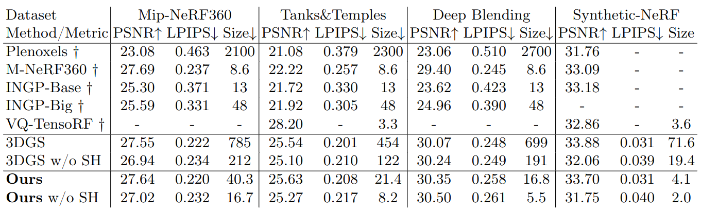

3D Gaussian Splatting has recently emerged as a highly promising technique for modeling of static 3D scenes. In contrast to Neural Radiance Fields, it utilizes efficient rasterization allowing for very fast rendering at high-quality. However, the storage size is significantly higher, which hinders practical deployment, e.g.~on resource constrained devices. In this paper, we introduce a compact scene representation organizing the parameters of 3D Gaussian Splatting (3DGS) into a 2D grid with local homogeneity, ensuring a drastic reduction in storage requirements without compromising visual quality during rendering. Central to our idea is the explicit exploitation of perceptual redundancies present in natural scenes. In essence, the inherent nature of a scene allows for numerous permutations of Gaussian parameters to equivalently represent it. To this end, we propose a novel highly parallel algorithm that regularly arranges the high-dimensional Gaussian parameters into a 2D grid while preserving their neighborhood structure. During training, we further enforce local smoothness between the sorted parameters in the grid. The uncompressed Gaussians use the same structure as 3DGS, ensuring a seamless integration with established renderers. Our method achieves a reduction factor of 17x to 42x in size for complex scenes with no increase in training time, marking a substantial leap forward in the domain of 3D scene distribution and consumption.
An overview of our novel 3DGS training method. During training, we arrange all high dimensional attributes into multiple 2D grids. Those grids are sorted and a smoothness regularization is applied. This creates redundancy which help to compress the 2D grids into small files using off-the-shelf compression methods.
| 3DGSOurs | 3DGS w/o SHOurs w/o SH |
|---|---|
|
639.7 MB 28.8 MB |
174.0 MB11.8 MB |
|
848.1 MB55.0 MB |
232.8 MB22.2 MB |
Our method maintains high rendering quality while only using a fraction of the memory footprint.
@article{morgenstern2023compact,
title={Compact 3D Scene Representation via Self-Organizing Gaussian Grids},
author={Morgenstern, Wieland and Barthel, Florian and Hilsmann, Anna and Eisert, Peter},
journal={arXiv preprint arXiv:2312.13299},
year={2023}
}